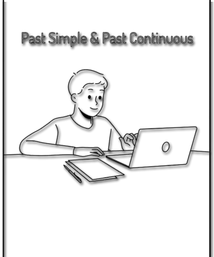

What is the past Continuous
The Past Continuous is an English verb tense used to describe actions that were occurring at a specific time in the past.
How is it formed?
It is formed using the auxiliary verb "was" or "were" (depending on the subject) followed by the main verb in its -ing form.
Subject + was/were + verb in -ingI/he/she/it uses was.
you/we/they usa were.